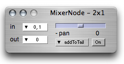
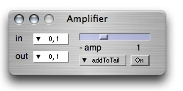
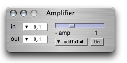

ixiQuarks : MixerNode
  

| MixerNode + Amplifier |
| The Mixer Node takes a stereo input and mixes it to a mono signal, or vice versa. The Amplifier amplifies a signal from 0 to 10. (allowing for digital distortion) but useful if the signal is low. |